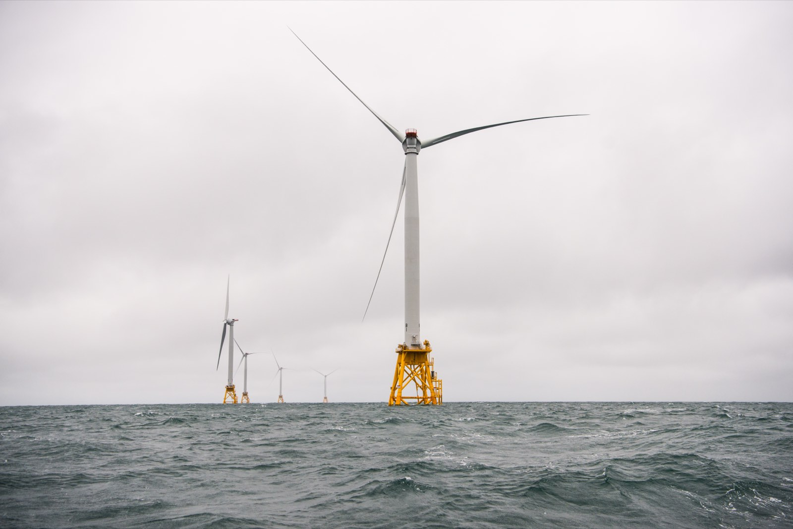
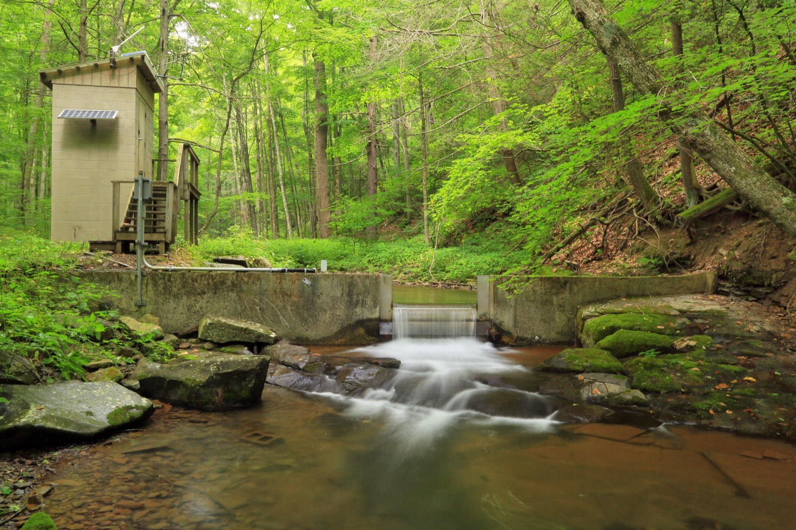

Peer-reviewed research, translated into clear, accessible information.
The Science and Freedom for Everyone Foundation is a non-partisan educational and scientific organization. Through the SAFE Research Institute, the Foundation reviews and synthesizes existing peer-reviewed research on science and technology topics, including public health, biotechnology, energy, computing and data centers, the environment, and local economic development, then publishes plain-language reports, summaries, and white papers that are freely available to the general public.
Evidence Library
Everything the Institute has published, newest first. Free to read and download as a PDF, with no sign-up.
| Title | Type | Topic | Updated | |
|---|---|---|---|---|
| Scientific Integrity in Public Health Research: A Policy Analysis | Model policy document | Public health | ||
| Pharmacist Immunization Authority: A Policy Analysis | Model policy document | Public health | ||
| Equitable Immunization Access: A Policy Analysis | Model policy document | Public health | ||
| Insurance Coverage for Immunizations: A Policy Analysis | Model policy document | Public health | ||
| Medical-Only Immunization Exemption Standards: A Policy Analysis | Model policy document | Public health | ||
| Interstate Public Health Collaboration: An Educational Overview | Model policy document | Public health | ||
| Expanding Immunization Provider Access: A Policy Analysis | Model policy document | Public health | ||
| Evidence-Based Immunization Guidance: A Policy Analysis | Model policy document | Public health |
Publication standards
- Review
- Foundation policy is that each report is reviewed by the Scientific Advisory Board before release. Members are announced as they are confirmed.
- License
- Model policy documents: CC0 1.0 (public domain). Research reports, white papers, and educational materials: CC BY 4.0.
- Access
- Free to read and download. No sign-up.
- Independence
- Gift Acceptance & Independence Policy
What the Foundation does
The Foundation carries out its educational mission through three core activities. During its start-up period it runs on volunteer support, so each activity is also a way to get involved.


Research Analysis and Scientific Publications
The Foundation reviews and synthesizes existing peer-reviewed scientific literature on science and technology topics, including public health and biomedicine. Findings are compiled into reports, summaries, and white papers and published on the Institute's website, freely available to the public.
Who we need: Scientists, MDs, and data scientists.
Apply to volunteerPublic Education and Community Outreach
The Foundation produces educational summaries, explainers, webinars, and presentations on scientific topics for non-specialist audiences. These activities are delivered online and, where requested, in person at libraries, schools, and community venues on a non-discriminatory basis.
Who we need: Educators, science communicators, and public health professionals.
Apply to volunteerOpen Access Educational Resources and Technical Assistance
The Foundation makes its educational materials freely available to the public and, on written request from a community organization, government body, regulator, or policymaker, prepares and delivers a research-based educational briefing on a specific scientific question. Briefings present facts, methodology, and the state of the scientific evidence. The Foundation does not recommend the adoption, modification, or rejection of any specific legislation, regulation, or policy proposal.
Who we need: Digital strategists, web developers, and communication specialists.
Apply to volunteerReady to Get Involved?
The volunteer onboarding process includes a brief application, a commitment overview, and signing of the Foundation's Code of Integrity. Applications are reviewed within five to seven business days.
Not sure where you fit? Start the application and we'll help you find the right activity.